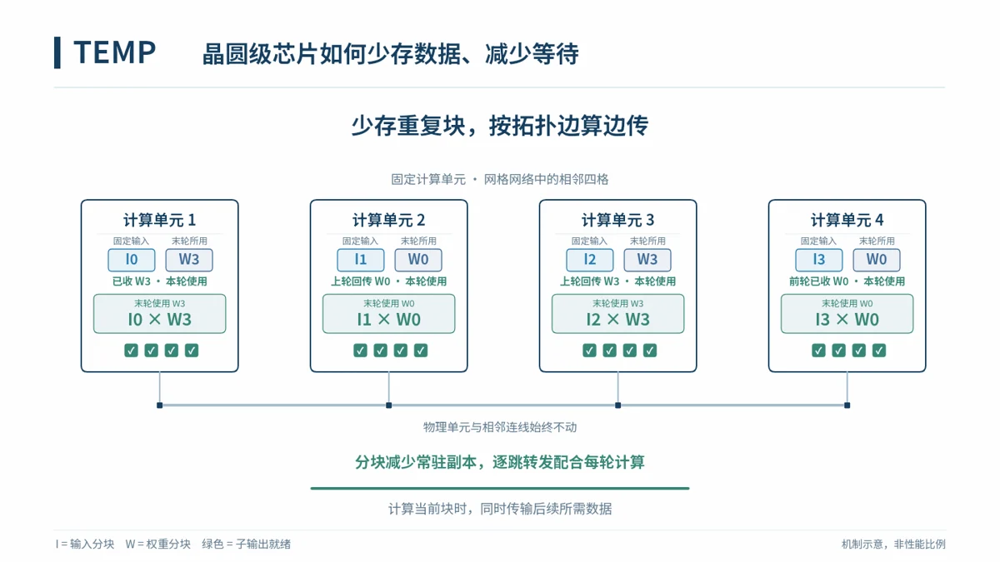

首页/论文/TEMPHPCA 2026TEMPTEMP: A Memory Efficient Physical-Aware Tensor Partition-Mapping Framework on Wafer-Scale ChipsHuizheng Wang, Taiquan Wei, Zichuan Wang, Dingcheng Jiang, Qize Yang, Jiaxin Liu, Jingxiang Hou, Chao Li, Jinyi Deng, Yang Hu, Shouyi Yin协同张量划分、映射与通信，缓解晶圆级芯片上的存储压力。论文原文 ↗DBLP ↗观看机制动画 ↓研究机制交互式机制动画中文动画▶播放动画正在加载动画…放大全屏打开动画← 返回论文列表English →